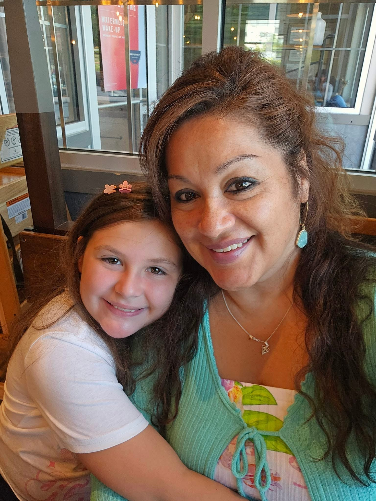
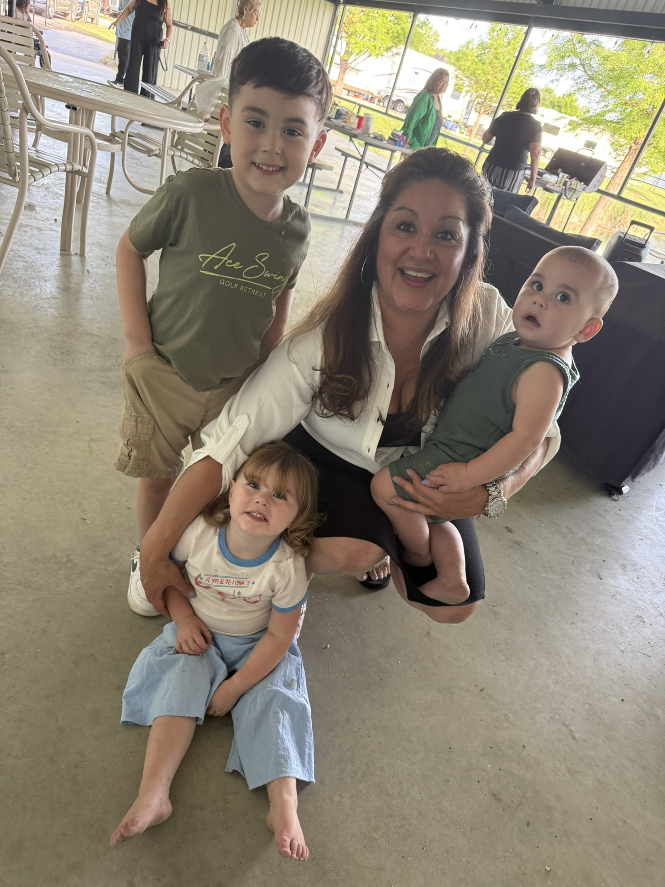

Susy has been licensed for three years, but spent that time searching for the right company to partner with — until she found GFI / 9-LF. The moment she connected with the team, everything aligned: their faith, their pillars, all of it. What drives her now is urgency — she knows firsthand what it's like to lack financial education, even as a sharp, accomplished woman who has climbed corporate ladders. This was the one piece she'd been missing. Now she's here to learn it, and here to teach it.
Susy's life runs on five pillars: Faith, Fitness, Finance, Family, and Freedom. She enjoys helping people on every front — financial, spiritual, or as simple as a ride to the store. These days she isn't driven by money, but by purpose. She feels especially called to help Hispanic families and the younger generation who haven't been taught about finances.
Outside of 9-LF, Susy runs Speak Life Ministry, an outdoor church where she holds service with the unsheltered community, shares meals, and fellowships together. She also hosts a networking group where people come together to pray over their businesses and their situations, and to build community.
Susy has wonderful kids and grandbabies who she has always put first. Over the past year, she's been given the space to invest in herself too — a journey that hasn't always been easy, but has been deeply fulfilling, teaching her more about herself and her faith than she ever expected.


"Seek and you shall find." — Matthew 7:7